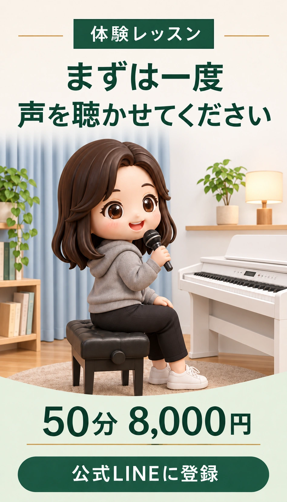
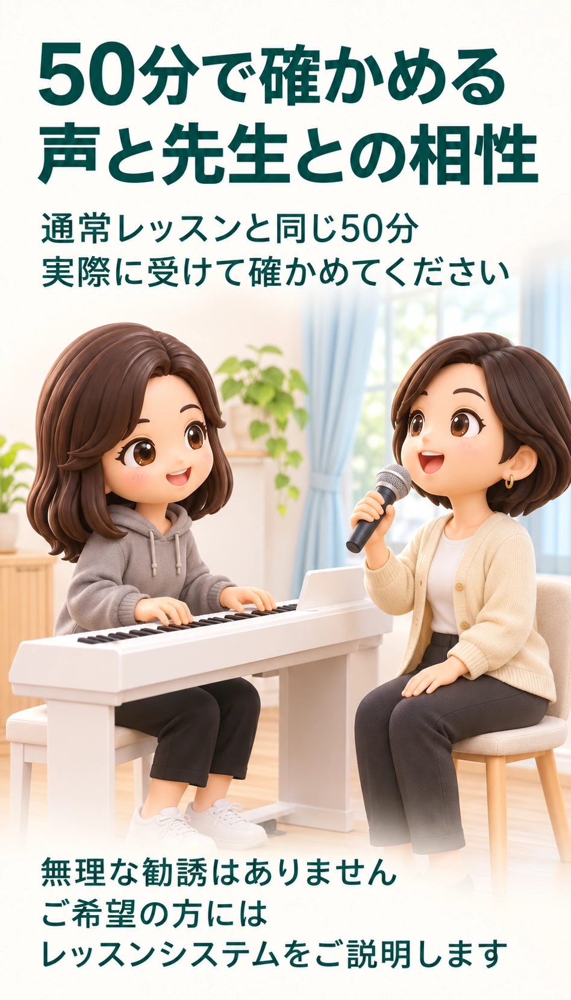
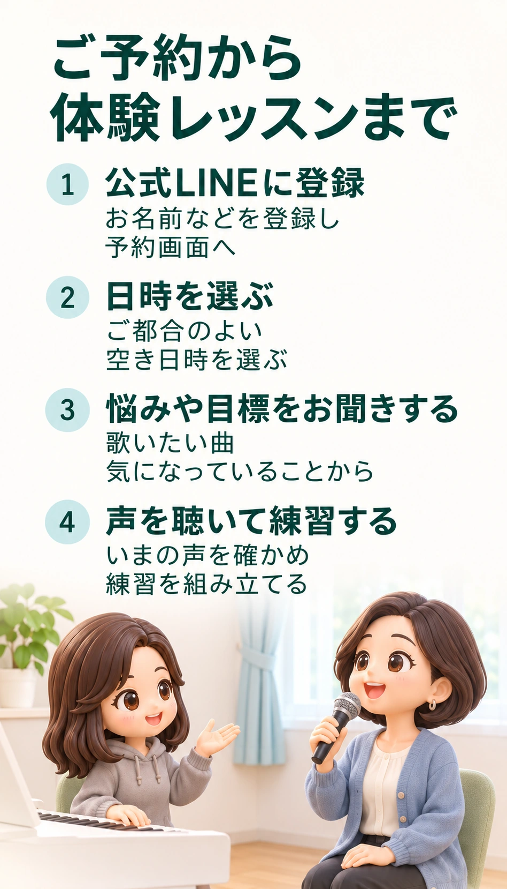
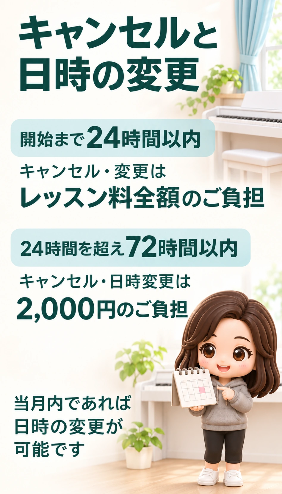

50分で確かめる
声と先生との相性
通常レッスンと同じ50分
実際に受けて確かめてください
無理な勧誘はありません
ご希望の方には
レッスンシステムをご説明します
ご予約から
体験レッスンまで
- 1
公式LINEに登録
お名前などを登録し予約画面へ
- 2
日時を選ぶ
ご都合のよい空き日時を選ぶ
- 3
悩みや目標をお聞きする
歌いたい曲 気になっていることから
- 4
声を聴いて練習する
いまの声を確かめ練習を組み立てる
続け方を選べる レッスン料金
| 体験・ビジターコース (都度払い) | 50分 8,000円 | |
|---|---|---|
| 月会費コース | 月2回 | 14,000円 |
| 月3回 | 19,500円 | |
| 月4回 | 24,000円 | |
月会費は翌月分を月末までに
ご予約・お支払いの方
お支払いのご案内
現金 またはPayPay
オンラインレッスンは
レッスン前日までにお支払いをお願いします
キャンセルと日時の変更
- 開始まで24時間以内
- キャンセル・変更は
レッスン料全額のご負担 - 24時間を超え72時間以内
- キャンセル・日時変更は
2,000円のご負担 - 当月内
- 日時の変更が可能です
体験レッスンの感想
細倉ゆたか様
感想を全文読む
「私の悩みは、声が低く、高音を出そうと思うとブレてしまうことです。結果から言うと「高音が体験中の何分かの間にラクラク出ました」！！リラックスしながら声を出す、とはこういう事なのか！と、目からウロコの体験でした。高音域に悩んでるみなさん、ハリウッド式ボイトレ、パないっすよ！マジお勧めです！！」
細倉ゆたか様 （体験レッスン）
掲載しているのは個人の感想です
感じ方や変化には個人差があります

まずは一度 声を聴かせてください

公式LINEに登録



 細倉ゆたか様の感想を全文読む
細倉ゆたか様の感想を全文読む感想を全文読む
「私の悩みは、声が低く、高音を出そうと思うとブレてしまうことです。結果から言うと「高音が体験中の何分かの間にラクラク出ました」！！リラックスしながら声を出す、とはこういう事なのか！と、目からウロコの体験でした。高音域に悩んでるみなさん、ハリウッド式ボイトレ、パないっすよ！マジお勧めです！！」
細倉ゆたか様 （体験レッスン）
掲載しているのは個人の感想です
感じ方や変化には個人差があります